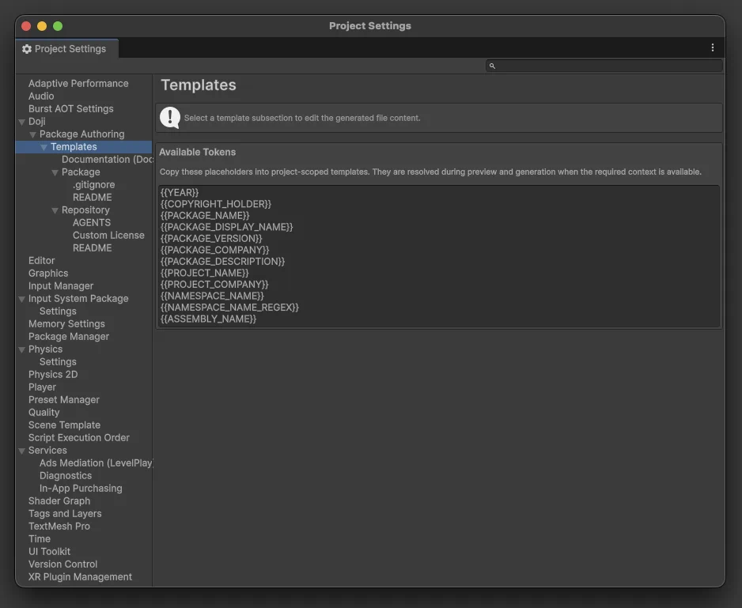
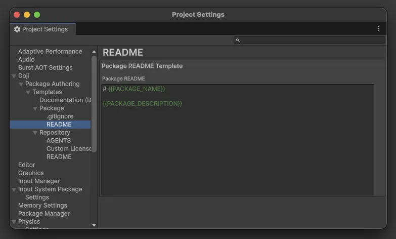
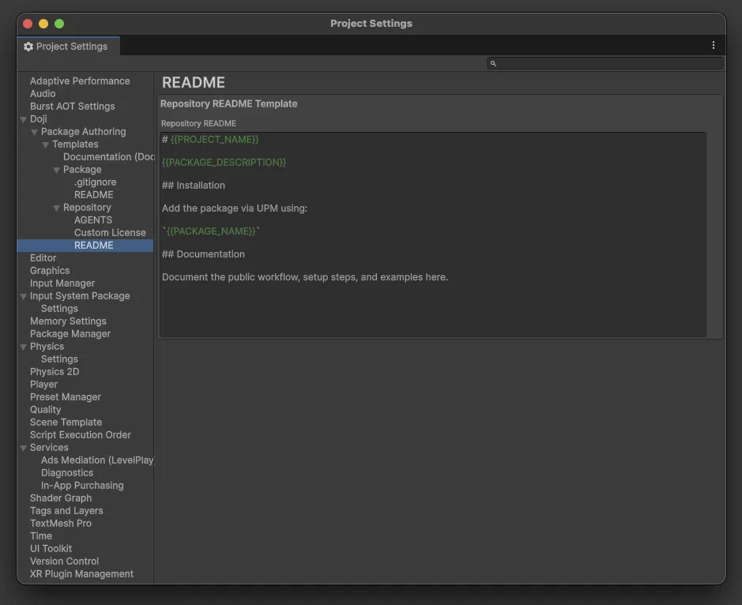
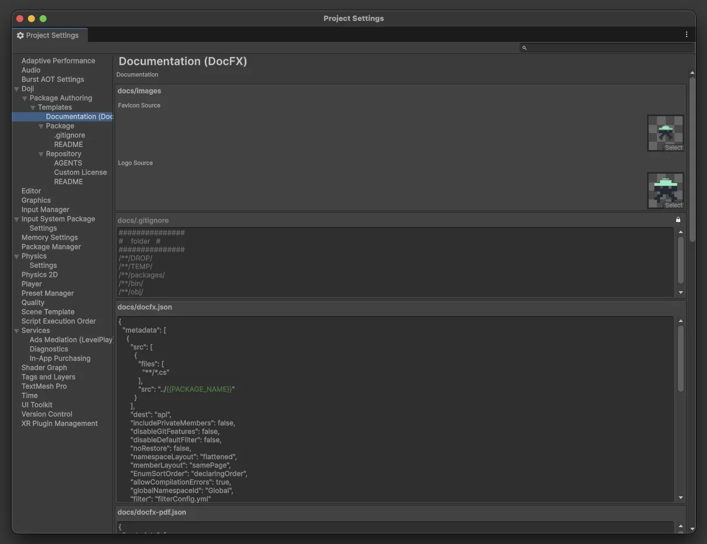
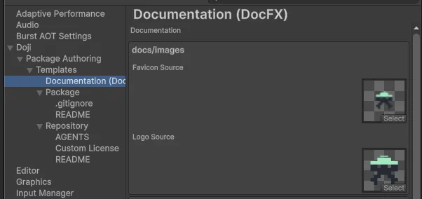

Templates
The package-authoring tools generate several repository and package files from project-scoped templates.
Open them from Project Settings > Doji > Package Authoring > Templates.

Template Categories
The template settings are grouped into:
PackageRepositoryDocumentation (DocFX)
The top-level Templates page also shows the supported placeholder tokens that can be reused across editable templates.
Supported Tokens
The shared token set is:
{{YEAR}}{{COPYRIGHT_HOLDER}}{{PACKAGE_NAME}}{{PACKAGE_DISPLAY_NAME}}{{PACKAGE_VERSION}}{{PACKAGE_COMPANY}}{{PACKAGE_DESCRIPTION}}{{DOCUMENTATION_URL}}{{PROJECT_NAME}}{{PROJECT_COMPANY}}{{NAMESPACE_NAME}}{{NAMESPACE_NAME_REGEX}}{{ASSEMBLY_NAME}}
Tokens are resolved from the current package, repository, and project settings at generation time.
{{DOCUMENTATION_URL}} uses the package Documentation URL setting. If that setting is empty, generated DocFX branding links fall back to # so the logo stays on the current page instead of pointing at an external site.
Package Templates

These templates affect files generated inside the package itself or directly into generated Unity projects.
.gitignore
Path:
Project Settings > Doji > Package Authoring > Templates > Package > .gitignore
This template is written into generated Unity projects. In the package creation flow, that means the companion project receives it. In the standalone project creation flow, the generated standalone project receives it.
README
Path:
Project Settings > Doji > Package Authoring > Templates > Package > README
This template becomes the package root README.md when Include Package README is enabled.
Repository Templates

These templates affect files written at the repository root.
README
Path:
Project Settings > Doji > Package Authoring > Templates > Repository > README
This template becomes the repository root README.md when repository Include README is enabled.
AGENTS
Path:
Project Settings > Doji > Package Authoring > Templates > Repository > AGENTS
This template becomes the repository root AGENTS.md when Generate AGENTS.md is enabled in the project settings section.
Custom License
Path:
Project Settings > Doji > Package Authoring > Templates > Repository > Custom License
This template is used only when repository Open Source License is set to Custom.
If the license type is set to one of the built-in SPDX options, the generated license comes from the built-in license templates instead.
Documentation Templates
Path:
Project Settings > Doji > Package Authoring > Templates > Documentation (DocFX)

The generated docs/ folder is created when Create Documentation Folder is enabled.
The documentation template set includes:
- branding image sources for
docs/images - editable template assets for
docs/docfx.json - editable template assets for
docs/docfx-pdf.json - editable template assets for
docs/filterConfig.yml - editable template assets for
docs/index.md - editable template assets for
docs/api/index.md - built-in locked templates for
docs/.gitignore - built-in locked templates for
docs/api/.gitignore - built-in locked templates for
docs/toc.yml - built-in locked templates for
docs/manual/toc.yml - built-in locked templates for
docs/pdf/toc.yml
See Companion And Standalone Projects for how generated projects consume the package.
Documentation Branding
The documentation settings page can also write branding outputs under docs/images.

Favicon Sourceis used to generatedocs/images/favicon.icoLogo Sourceis used to generatedocs/images/logo.png
If no source textures are configured, the documentation scaffold is still created, but the image outputs are skipped.
Editable Documentation Files
These are the files you will most commonly customize when you want different generated docs output between repositories.
docs/docfx.json
This is the main DocFX configuration used for the HTML site output.
It contains the metadata and build configuration for:
- API extraction from the generated package source
- manual page inclusion
- output location
- template selection
docs/docfx-pdf.json
This is the PDF-oriented DocFX configuration.
It extends the documentation build with PDF metadata and the PDF table-of-contents file.
docs/filterConfig.yml
This file controls which namespaces DocFX includes or excludes while generating the API reference.
The default filter is tokenized around the package namespace so it can adapt to each generated repository.
docs/index.md
This is the generated documentation landing page for the repository docs site.
High-level package-facing documentation, overview text, and links into the manual and API reference.
docs/api/index.md
This is the generated landing page for the API reference section.
Introductory text for the scripting API pages that DocFX generates from the package source.
Locked Documentation Files
These files are still part of the generated docs scaffold, but they are provided as built-in content rather than editable project overrides.
docs/.gitignore
This built-in file ignores DocFX output and build intermediates inside the generated docs/ folder.
docs/api/.gitignore
This built-in file ignores generated API YAML files and the DocFX manifest data under docs/api/.
docs/toc.yml
This built-in root table of contents defines the top-level documentation navigation for the generated site.
docs/manual/toc.yml
This built-in manual table of contents provides the manual section entry point for generated docs.
docs/pdf/toc.yml
This built-in PDF table of contents controls the PDF-oriented navigation tree used by the DocFX PDF build.
Why Some Templates Are Editable And Others Are Locked
The template editor distinguishes between:
- editable project-scoped templates that you can change directly
- locked built-in templates that are shown for reference but not edited from the UI
Locked templates still matter because they define parts of the generated repository structure even when you cannot edit them in the settings page.
How Token Resolution Works
Token resolution happens when files are generated, not when you save the template.
That means one template can be reused across many packages and companion projects. The final text depends on the wizard values in the current generation run.
Examples:
- a repository README can include
{{PACKAGE_NAME}}and{{PACKAGE_DESCRIPTION}} - a documentation index page can include
{{PACKAGE_NAME}} - a custom license can include
{{YEAR}}and{{COPYRIGHT_HOLDER}}
Good Template Practices
Templates are best for content that should stay consistent across repositories, not for values that already have dedicated settings.
In practice:
- keep identifiers, version, company names, and URLs in the settings models
- use templates to control wording, structure, and repository conventions
- prefer tokens over hardcoded package-specific strings when the template is intended for reuse